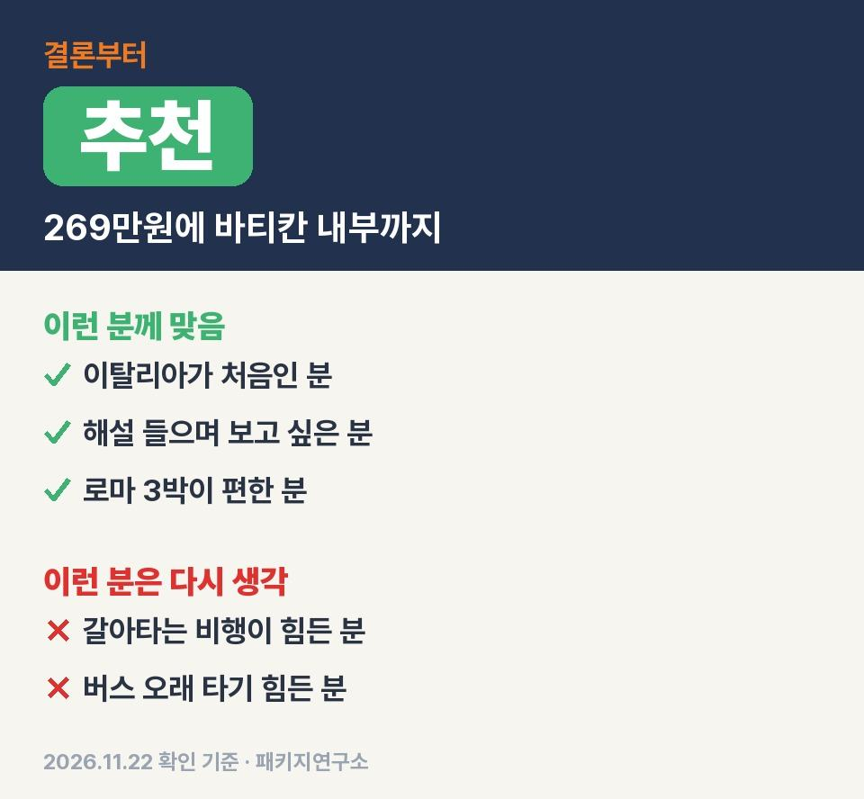
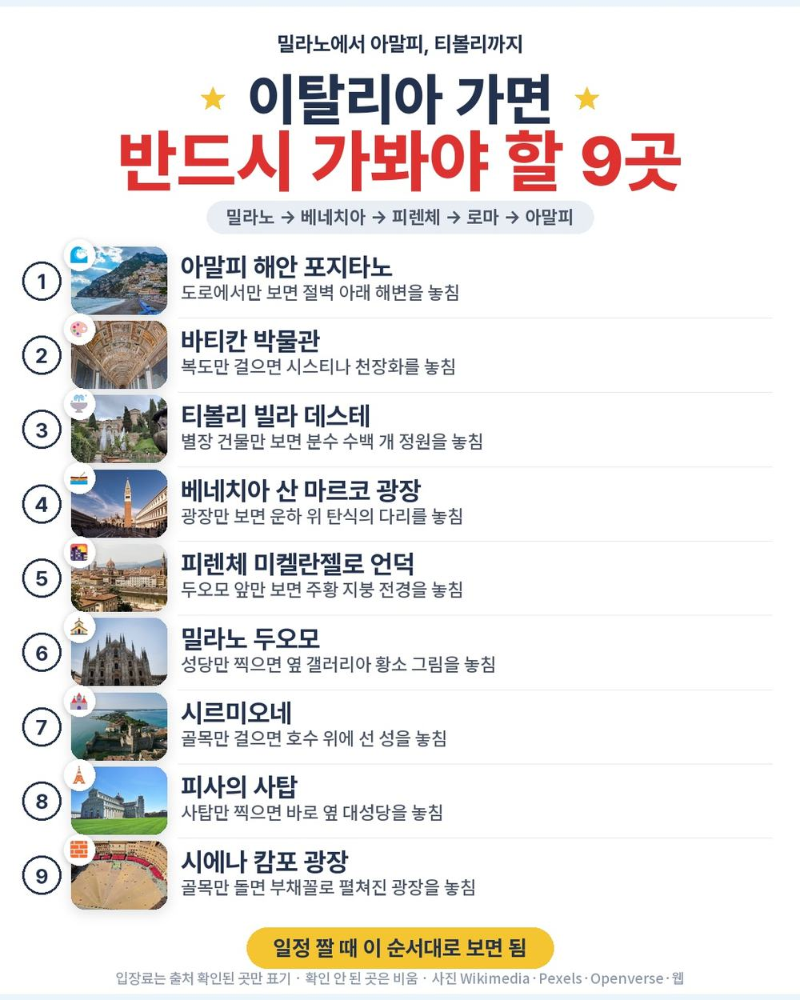
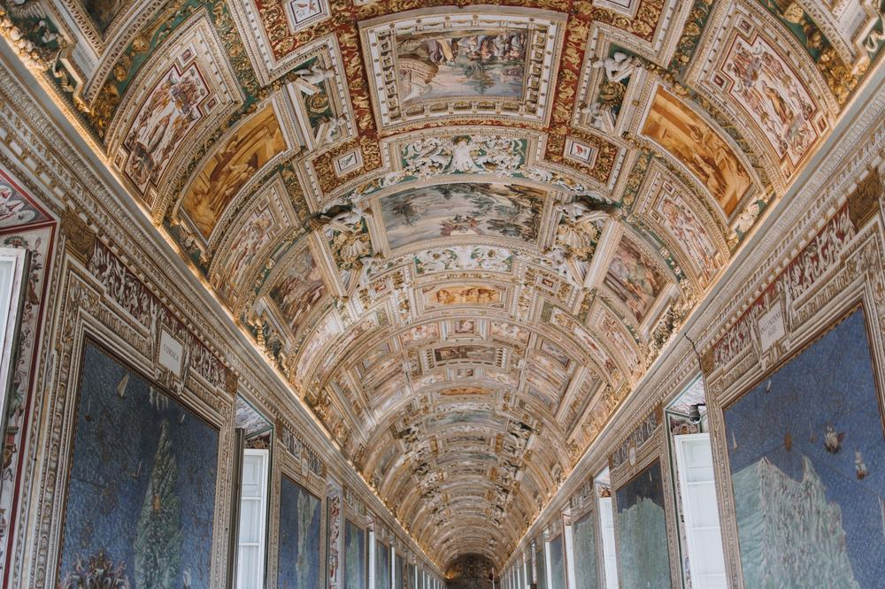
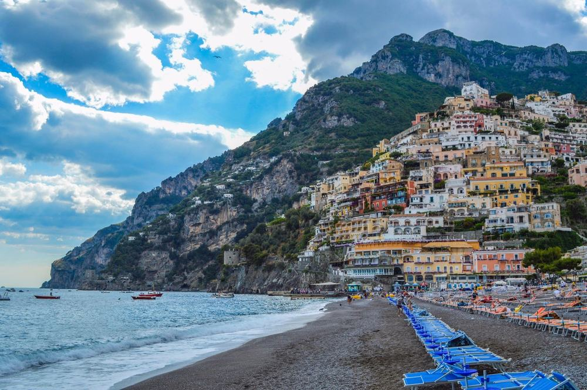
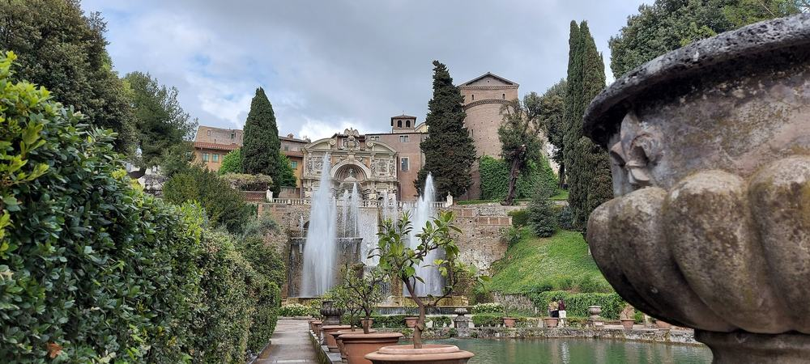

밀라노로 들어가 로마로 나오면서 남쪽 아말피 해안과 로마 근교 티볼리 정원까지 들르는 7박 9일임.
직접 다녀온 후기가 아니고 참좋은여행 일정표와 포함·불포함 원문을 한 줄씩 따져 본 글임.
결론 — 추천. 에미레이트 왕복 항공, 일급 호텔, 식사 16번, 바티칸 박물관·시스티나 예배당·성 베드로 성당 내부와 티볼리 빌라 데스테 정원, 전 일정 인솔자가 269만원 안에 있음. 다만 갈아타는 비행이 힘든 분은 다시 따져 볼 것.

오늘 기준 출발일별 요금 보기
https://naver.me/FmGzAqSK

| 항목 | 내용 |
|---|---|
| 가격 | 1인 2,690,000원 (성인·소아 같음 · 12월 출발 기준) · 2인 5,380,000원 |
| 여행사 | 참좋은여행 |
| 항공 | 에미레이트항공 두바이 경유 · 갈 때 약 9시간 30분 + 약 6시간 40분 / 올 때 약 5시간 45분 + 약 8시간 20분 |
| 숙소 | 일급 호텔(이름은 출발 전 안내) · 베로나·볼로냐·몬테카티니 쪽 1박씩, 로마 3박 |
| 일정 | 7박 9일 · 식사 16번 · 선택관광 5개 · 쇼핑 3회 · 가이드·기사 경비 90유로 별도 |
▶ 내 출발일 오늘 기준 요금 확인 (제휴 링크 · 예약 시 수수료를 받으며 가격은 같습니다)
▶ 11월 22일 기준 이탈리아·스위스 패키지 최저 259만원부터 — 출발일별 값 한 화면에: 비교 페이지
| 번호 | 내용 | 한 줄 답 |
|---|---|---|
| 1 | 이 값에 들어 있는 것 | 바티칸 내부·인솔자 |
| 2 | 현장에서 더 낼 돈 | 2인 180유로 |
| 3 | 일정과 체력 | 버스 7시간대 사흘 |
| 4 | 자유여행으로 짜면 | 항공값 조회 못 함 |
| 5 | 맞는 분 · 안 맞는 분 | 3 대 3 |
왕복 항공과 호텔, 식사 16번에 바티칸 내부 관람과 전 일정 인솔자까지 한 값에 묶임.
- 항공: 에미레이트항공 왕복(두바이 경유), 유류할증료·제세공과금 포함
- 숙소: 전 일정 일급 호텔, 2인 1실(트윈 또는 더블)
- 식사: 16번, 피자·파스타 같은 현지식 위주에 한식 1번
- 입장: 바티칸 박물관·시스티나 예배당·성 베드로 성당 내부, 티볼리 빌라 데스테 정원, 오르비에토 푸니쿨라
- 동행: 유럽 전문 인솔자 전 일정, 개인용 수신기

밀라노·피렌체 두오모와 콜로세움은 밖에서 보는 일정임. 대신 줄이 길기로 이름난 바티칸을 안까지 넣어 둔 게 이 값의 중심이라고 봄. 호텔 이름이 아직 안 나온 건 예약 전에 알고 갈 것.
꼭 내는 돈은 가이드·기사 경비 1인 90유로이고 나머지는 고르는 만큼 붙음.
| 항목 | 금액 | 필수/선택 | 비고 |
|---|---|---|---|
| 가이드·기사 경비 | 180유로 (약 26만 3천원) | 필수 | 1인 90유로 · 1유로 약 1,461원(11/20) |
| 선택관광 5개 | 0~620유로 | 선택 | 보트 30 · 곤돌라 60 · 수상택시 60 · 벤츠 투어 70 · 아말피 투어+유람선 90유로(1인) |
| 7일차 점심 | 직접 | 필수 | 불포함 사항에 따로 적혀 있음 |
| 물값·매너 팁 | 직접 | 선택 | 개인 비용 |
| 합계 (2인 필수분) | 180유로 (약 26만 3천원) | 상품가 2인 5,380,000원 별도 |
- 선택관광: 안 하면 주변 자유 시간이거나 인솔자와 걸어서 이동
- 쇼핑: 로마·피렌체·베네치아 1번씩, 한 번에 40분~1시간, 구매는 자유
- 유로: 5·10·20유로짜리 작은 돈으로 바꿔 가면 편함
버스가 긴 날은 4일차·5일차·7일차 사흘이고 아말피를 다녀오는 7일차가 약 7시간 50분으로 가장 김.
| 일차 | 가는 곳 | 버스 | 걷기 | 점심 · 저녁 |
|---|---|---|---|---|
| DAY 1 | 인천 밤 출발 → 두바이 | 거의 없음 | 적음 | 없음 · 없음 |
| DAY 2 | 두바이 → 밀라노 두오모(외관)·갤러리아 → 베로나 | 약 2시간 | 보통 | 기내식 · 현지식 |
| DAY 3 | 시르미오네 → 베네치아 산 마르코 광장·탄식의 다리 → 볼로냐 | 약 3시간 20분 | 보통 | 현지식 · 현지식 |
| DAY 4 | 볼로냐 → 피렌체 미켈란젤로 언덕 → 피사 → 몬테카티니 | 약 7시간 | 많음 | 중식 · 현지식 |
| DAY 5 | 시에나 → 바뇨 비뇨니 → 오르비에토 → 로마 | 약 6시간 10분 | 보통 | 현지식 · 현지식 |
| DAY 6 | 바티칸 내부 → 콜로세움(외관) → 트레비 분수 | 약 1시간 | 많음 | 현지식 · 한식 |
| DAY 7 | 로마 → 아말피 해안도로 → 포지타노 → 로마 | 약 7시간 50분 | 보통 | 불포함 표기 · 현지식 |
| DAY 8 | 티볼리 빌라 데스테 → 로마 공항 → 두바이 | 약 2시간 | 보통 | 없음 · 없음 |
| DAY 9 | 두바이 → 인천 | 거의 없음 | 적음 | 없음 · 없음 |
- 비행: 갈 때·올 때 모두 두바이에서 한 번 갈아탐
- 걷기: 후기에 도심은 큰 버스가 못 들어가 걷는 시간이 길다는 말이 있음
- 포지타노: 해변 쪽 계단이 가파르다는 후기가 있음

9일에 도시 열두 곳을 넣었으니 버스가 긴 건 어쩔 수 없는 값임. 그나마 뒤쪽 사흘 밤을 로마 한 도시에서 묵게 짜 둔 건 잘한 구성임. 편한 운동화 한 켤레가 이 일정에선 제일 큰 준비물임.
이 상품 조건 한눈에 (출발일 달력·두 분 값·비슷한 상품과 비교)
https://pkg-lab.com/pkg/EPP3752/?utm_source=ghpages&utm_medium=post&utm_campaign=daily
같은 목적지 다른 여행사 패키지, 쇼핑·선택관광·가이드 경비까지 비교
https://pkg-lab.com/dest/IT/m/2026-12/?utm_source=ghpages&utm_medium=post&utm_campaign=daily
항공값을 오늘 조회하지 못해 합계는 안 냈고 직접 짤 때 따로 챙길 칸만 적음.
| 항목 | 금액 | 근거 |
|---|---|---|
| 인천–밀라노 / 로마–인천 항공 | 확인 못 함 | 2026-11-22 마이리얼트립 조회 안 됨, 숫자를 지어내지 않음 |
| 호텔 6박 | 확인 못 함 | 도시·날짜마다 다름 |
| 식사 | 따로 | 패키지는 16번 포함 |
| 공항 이동 | 따로 | 패키지는 전용 버스 포함 |
| 도시 사이 이동 | 따로 | 패키지는 전용 버스, 아말피는 작은 전용 차량 |
| 바티칸·빌라 데스테 입장 | 따로 | 패키지는 포함 |
| 여행자보험 | 따로 | 패키지는 포함 |
| 가이드 | 해당 없음 | 자유여행은 없음 |
- 동선: 밀라노에서 아말피까지 열두 도시를 기차와 버스로 이으려면 예약할 게 많음
- 바티칸: 입장권과 해설을 따로 구해야 함
- 실값: 날짜를 정한 뒤 항공과 호텔을 넣어 비교하는 게 정확함

걸리는 건 갈아타는 비행과 긴 버스 사흘이고 누구에게만 문제인지 분명함.
| 맞는 분 | 안 맞는 분 |
|---|---|
| 이탈리아가 처음이라 북쪽부터 남쪽까지 한 번에 보려는 분 | 직항이 아니면 힘든 분 |
| 바티칸을 해설 들으며 안까지 보려는 분 | 버스에 오래 앉아 있기 힘든 분 |
| 뒤쪽 사흘을 로마 한 도시에서 묵고 싶은 분 | 성당마다 안까지 들어가 보려는 분 |
참좋은여행 게시판 후기에는 절벽 위 아말피 마을 풍경과 미켈란젤로 언덕 전경이 좋았다는 글이 여럿임. 도시가 많아 이동이 고단했다는 글, 객실에 커피포트가 없어 챙겨 가면 좋다는 글도 같이 있음.
Q. 이탈리아 패키지 가격은 이 상품이 얼마인가요?
A. 12월 출발 기준 1인 269만원, 2인 538만원. 출발일마다 값이 달라서 날짜별로 확인해야 함.
Q. 이탈리아 패키지 쇼핑은 몇 번인가요?
A. 3번. 로마·피렌체·베네치아에서 1번씩이고 한 번에 40분~1시간. 구매는 자유임.
Q. 이탈리아 패키지 선택관광 비용은 얼마인가요?
A. 5개이고 1인 30~90유로. 다 하면 1인 310유로. 안 하면 자유 시간이나 걸어서 보는 일정으로 대신함.
아말피 해안과 티볼리 정원까지 넣고 바티칸은 안으로 들어가는 구성이 이 값의 이유임.
이탈리아를 처음 가는 분께 잘 맞는 9일임.
출발일에 따라 값이 달라서 가려는 날짜 요금부터 보면 됨.
오늘 기준 출발일별 요금 보기
https://naver.me/FmGzAqSK
이 글에는 네이버 제휴 링크가 포함되어 있으며, 링크를 통해 예약하시면 일정 수수료를 받습니다. 가격은 동일합니다. 가격과 구성은 2026년 11월 22일 확인 기준이며 출발일에 따라 달라질 수 있습니다.
▶ 이 상품, 영상으로 보기 (유튜브)
▶ 이탈리아·스위스 패키지 오늘 값 나란히 비교
▶ 같은 목적지 다른 여행사 패키지, 쇼핑·선택관광·가이드 경비까지 비교: pkg-lab.com
.jpg){kind=link}